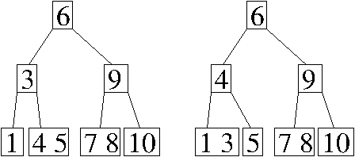
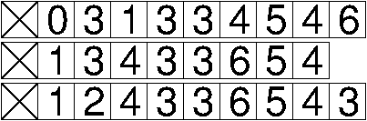
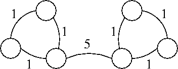

Problem 1. (9 points) Data Structures.
a. There are two possible answers, depending on which key is stolen from the parent of the node containing 3.

b. 
c. In the worst case, removing an entry takes Θ(n) time, because every entry might hash to the same bucket, and the binary search tree might be entirely unbalanced so that finding the entry to remove requires a linear-time search down the tree.
d. Finding the maximum key takes Θ(n) worst-case time, because any one of the leaf nodes could be the maximum key, and a binary heap has roughly n/2 leaves.
Problem 2. (6 points) Graphs.
a. A E F B C D
b. The maximum number of dfs() stack frames that can be on the stack at any one time is min{v, e + 1}.
c. Yes, it is possible that a minimum spanning tree includes the edge in G with maximum weight. In the following graph, every spanning tree must include the edge with maximum weight.

Problem 3. (10 points) Removing the Root Key from a Binary Search Tree.
public class BinarySearchTree {
BinaryTreeNode root; // The root node of this tree.
int size; // The number of keys stored in this tree.
public void removeRoot() { // Remove the root key from this tree.
if (root == null) { // or "if (size == 0)"
return;
}
if (root.right == null) {
root = root.left;
} else if (root.left == null) {
root = root.right;
} else {
BinaryTreeNode node = root.right;
while (node.left != null) { // find key following the root's key
node = node.left;
}
root.key = node.key;
if (node == root.right) { // or "if (node == node.parent.right)"
root.right = node.right; // or "node.parent.right = node.right"
} else {
node.parent.left = node.right;
}
if (node.right != null) {
node.right.parent = node.parent;
}
}
if (root != null) {
root.parent = null; // Only needed when root.right or root.left is null
}
size--; // Note that this line is not executed if root == null
}
}